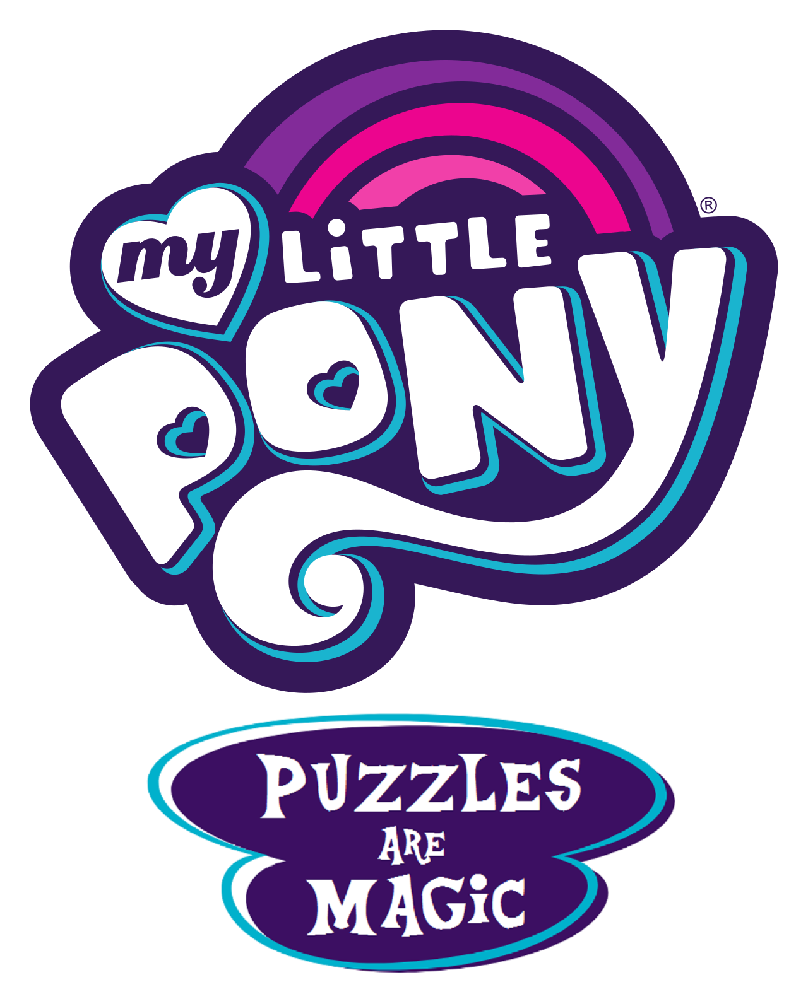

An online puzzlehunt themed around My Little Pony.
February 1, 2020 to February 9, 2020
My Little Pony: Puzzles are Magic is an online puzzlehunt themed around My Little Pony. Twilight Sparkle and the rest of her friends are tasked with solving a friendship problem, but there are a few puzzles between that problem and its solution.
Puzzles are Magic ran from February 1, 2020 to February 9, 2020. The puzzles can be viewed here, and our wrap-up can be read here.
Read the FAQ, or email the hunt organizers (puzzlesaremagic@gmail.com) with "Puzzle Hunt" somewhere in the subject line.